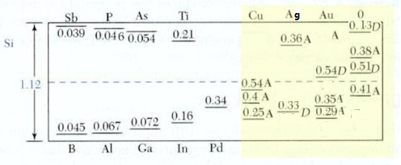
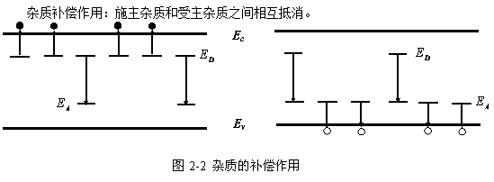
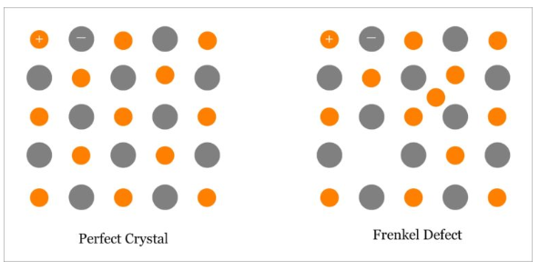

第二章
半导体中杂质能级和缺陷
主要内容
- 杂质能级
- 杂质种类
- 施主杂质
- 受主杂质
- 杂质电离能的简单计算
- 杂质补偿
- 深能级杂质
- III-V族化合物的杂质能级
- 缺陷、位错
2.1 硅、锗晶体中的杂质能级
2.1.1 杂质的种类
半导体杂质的来源：原材料、制备工艺、人为特意添加；
杂质的位置：间隙（比较小的杂质原子，如锂Li）、替位(或称置换)(大小差不多的原子，如III、V族原子杂质在硅、锗这些IV族晶体中)；
2.1.2 施主杂质 - n型半导体
V族的原子，如磷（P）、砷（As）等，掺杂入硅、锗晶体中，杂质原子容易失去电子，形成正电中心，这个过程称为杂质电离，所需要的能量称为电离能，电离能远比硅锗从价带跃迁到导带要克服共价键需要的能量（称为禁带宽度）要高得多。
| 晶体 | 禁带宽度Eg(eV) 室温300K下 | 杂质电离能(eV) | ||
|---|---|---|---|---|
| 磷P | 砷As | 锑Sb | ||
| 硅Si | 1.12 | 0.044 | 0.049 | 0.039 |
| 锗Ge | 0.66 | 0.0126 | 0.0127 | 0.0096 |
2.1.3 受主杂质 - p型半导体
III族的原子，如硼（B）、铝（Al）等，掺杂入硅、锗晶体中，杂质原子容易得到电子，形成负电中心，这个过程称为杂质电离，所需要的能量称为电离能，电离能远比硅锗从价带跃迁到导带要克服共价键需要的能量（称为禁带宽度）要高得多。
| 晶体 | 禁带宽度Eg(eV) 室温300K下 | 杂质电离能(eV) | |||
|---|---|---|---|---|---|
| 硼B | 铝Al | 镓Ga | 铟In | ||
| 硅Si | 1.12 | 0.045 | 0.057 | 0.065 | 0.16 |
| 锗Ge | 0.66 | 0.01 | 0.01 | 0.0011 | 0.0011 |
2.1.4 浅能级杂质电离能的简单计算
对硅、锗的晶体，其掺入的III、V族的杂质，其电离能都很小，受主能级很接近价带顶，施主能级接近于导带底，这些能级称为浅能级，将产生浅能级的杂质称为浅能级杂质
室温下，硅、锗中的III、V族杂质几乎全部电离。
2.1.4 浅能级杂质电离能的简单计算
对于浅能级杂质电离能的估算，可以采用下面的公式：
施主杂质电离能： $$ \Delta E_D = \frac{m_n^*q^4}{2(4\pi \varepsilon_0\varepsilon_r)^2\hbar^2}=\frac{m_n^*}{m_0}\frac{E_0}{\varepsilon_r^2} \tag{2-2} $$
受主杂质电离能： $$ \Delta E_A = \frac{m_p^*q^4}{2(4\pi \varepsilon_0\varepsilon_r)^2\hbar^2}=\frac{m_p^*}{m_0}\frac{E_0}{\varepsilon_r^2} \tag{2-3} $$
其中$\varepsilon_0=8.854\times 10^{-12}F/m$是真空中的介电常数，硅的相对介电常数$\varepsilon_r=11.9$，$m_n^*$为施主能级的相对电子质量，$m_p^*$为受主能级的相对空穴质量，$E_0=13.6eV$为基态电离能。
例1：设磷(P)掺入硅晶体形成施主浅能级，该能级上电子有效质量$m_n^*=0.49m_0$，估算其电离能。
解：∵ $\varepsilon_r=12, E_0=13.6eV, m_n^*=0.49m_0$，∴： $$ \Delta E_D = \frac{m_n^*}{m_0}\frac{E_0}{\varepsilon_r^2} = \frac{0.49m_0}{m_0}\frac{13.6}{12^2}=0.046 eV$$
2.1.5 杂质的补偿作用
当半导体中同时掺入施主和受主两种杂质时，施主能级上的电子要跃迁到受主能级上。对于提供载流子来说，两者有互相抵消的作用，有效掺杂浓度等于两者之差，这种现象被称为杂质补偿。
当施主杂质浓度和受主杂质浓度差不多时，由于杂质能级互相补偿，并没有很多的载流子，导致电性能不好。同时，其物理性能很差。
2.1.6 深能级杂质
非III、V族杂质在禁带中产生的杂质能级离价带顶和导带底都比较远，称为深能级，杂质为深能级杂质，如 金(Au)；
这些杂质可以在硅、锗中产生多次电离，引入多个能级，有些既有施主杂质能级，又有受主杂质能级。
深能级杂质对半导体的导电能力影响不如浅能级杂质，但对复合作用影响比较大，可以有效快速减少漏电流。金是很好的复合中心。
2.2 III-V族化合物的杂质能级
2.2.1 III-V族化合物
III族的硼（B）、铝（Al）、镓（Ga）、铟（In）、铊（Tl）和V族的氮（N）、磷（P）、砷（As）、锑（Sb）、铋（Bi）组成的二元化合物，成分比都是1：1；
由Al、Ga、In和P、As、Sb组成的化合物结晶为闪锌矿型结构，与金刚石结构类似；
GaAs中杂质也和硅、锗中一样，有替位式和间歇式两种；

2.2.2 III-V族化合物的杂质能级
GaAs的杂质能级：
III-V族化合物的浅能级杂质的电离能估算和前面的硅、锗的一样。
2.2.3 III-V族化合物的I族杂质
GaAs的杂质能级：
I族包括：金（Au）、银（Ag）、锂（Li）、铜（Cu），引入受主能级；
2.2.4 III-V族化合物的II族杂质
GaAs的杂质能级：
II族包括：铍（Be）、镁（Mg）、锌（Zn）、镉（Cd）、汞（Hg），引入受主能级；
2.2.5 III-V族化合物的III-V族杂质
原则上不引入能级；
但在特殊化合物中，比如磷化镓（GaP）掺入V族氮（N）或铋（Bi），N或Bi会取代P在禁带中产生能级，称为等电子陷阱，这种效应称为等电子杂质效应；
等电子陷阱俘获载流子成为带电中心，又可以俘获另一电性的载流子，形成束缚激子；
2.2.6 III-V族化合物的IV族杂质
GaAs的杂质能级：
IV族包括 ：碳（C）、硅（Si）、锗（Ge）、锡（Sn）、铅（Pb），有的引入受主能级（如C，Pb），有的引入施主能级（如Ge），有的则同时两种能级都引进（如Si、Sn），像这样的称为双性行为；
2.2.7 III-V族化合物的VI族杂质
GaAs的杂质能级：
VI族包括 ：氧（O）、硫（S）、硒（Se）、碲（Te），引入施主能级；
2.2.8 III-V族化合物的过渡族杂质
GaAs的杂质能级：

过渡族包括 ：铬（Cr）、锰（Mn）、钴（Co）、镍（Ni）、铁（Fe），引入受主能级；
2.4 缺陷、位错能级
2.4.1 点缺陷 point defects
1、弗仓克尔（Frenkel）缺陷：间隙原子和空位成对出现；
2.4.1 点缺陷
2、肖特基（Schottky）缺陷：只有空位无间隙原子；
2.4.1 点缺陷
3、对于硅、锗的晶体，空位缺陷相当于受主，间隙原子相当于施主；
2.4.2 位错 dislocation
2.4.2 位错 dislocation
位错可能引入施主或受主能级；
作业
Page 54: 2, 4, 5, 7